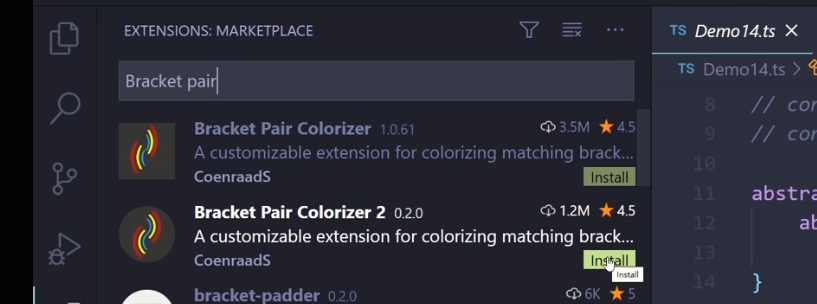
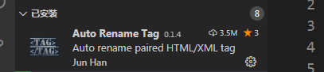

1. 插件
1.1 Bracket Pair Colorizer 2

1.是一个找括号的
- 虽然vscode自带了，但不明显
2.效果：
会有一条线，颜色根据主题，链接两个括号；
1.2 Auto Rename Tag
1.自动改标签
2.标签一般有两个，你改前面一个的时候，后面自动改了

3.它具备 auto close tag的功能，不需要安装这个；2020-9-14 20:24:02
- 如果是需要闭合的标签，会自动闭合；
1.3 CSS Peek
1.在html代码这边可以直接寻找css
- ctrl + 鼠标左键
- 原本放在上面就能看到css，如果只有单一的css
2.